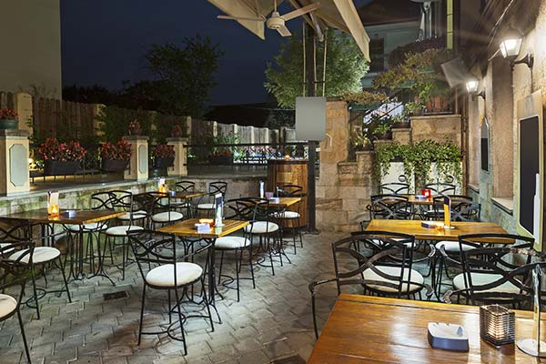
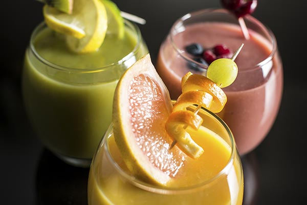

Dining in the Area
The West End is a foodie’s paradise, and the Landon Hotel is in the center of it all. With options for traditional English, Italian, Indian, American, Chinese, and French cuisines, all within two blocks of the hotel, and a variety of tasty culinary delights from many other countries, within a half-mile radius, the only trouble you’ll have is choosing!
Rooftop Café

Landon Rooftop Café is the destination for five star dining. Our master chefs are trained to meet special dietary needs, and we offer a range of vegetarian/vegan, kosher, gluten, and dairy free selections to accommodate our guests. Whether you’re in the mood for our award winning roast beef, fresh select salads, appetizing lunch entrees, or delectable desserts, we have you covered.
Smoothie Bar

The Rooftop Smoothie Bar gives you panoramic views of the city, where you can have one of our specialty smoothies while you wait for your table. Our top mixologists are constantly bringing new and unique offerings to our smoothie menu. We have a wide range of locally grown, fresh fruit and vegetable choices to make you custom blended drinks. We also have seasonal selections that you won’t find anywhere else.
Breakfast & Coffee Bar
Our traditional breakfast and coffee bar, located adjacent to our lounge, are the perfect way to start your morning. We offer a wide selection of seasonal fresh fruit, a variety of cereals, croissants, crusty sourdough bread, cook-to-order eggs and omelettes, fresh juice, coffee, and teas. Breakfast is served from 7:00 am to 10:00 am daily. Our coffee bar is open until 6:30 pm daily.
Room Service
If you’d rather stay in your room and enjoy a quiet evening in, or a relaxing breakfast in bed, room service options are available for all of our dining choices.